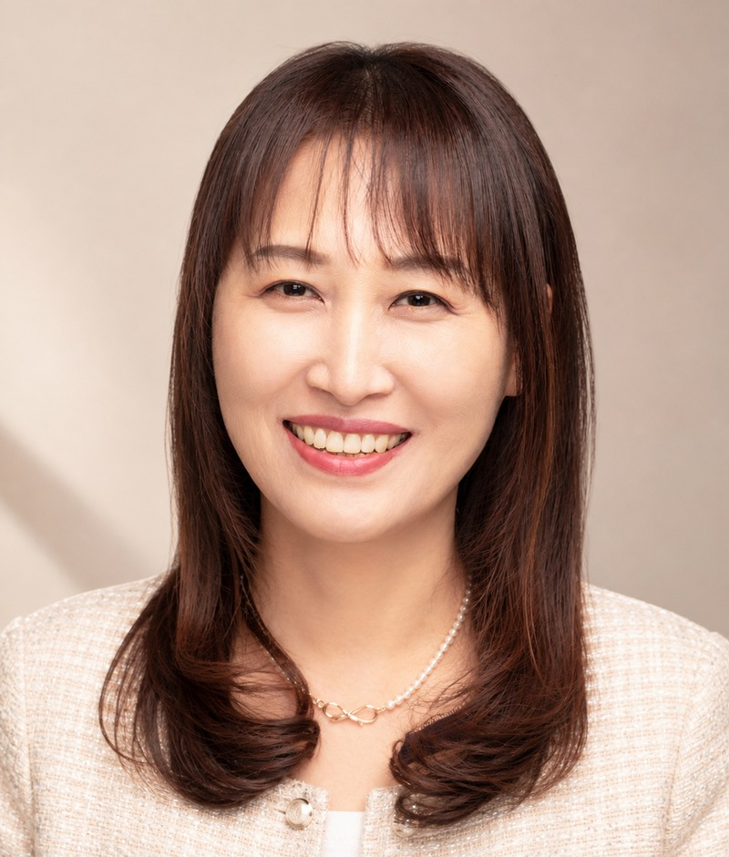

수강 대상이 바뀌면
강의도 완전히 바뀝니다
같은 챗GPT라도 7급 공무원, 소방장, 교장, 기업 임직원, 농업인, 어르신에게 각각 다른 예시와 속도로 전달합니다. 실제로 이 모든 대상에게 출강해 왔습니다.
챗GPT·생성형 AI 교육 전문가
기능 소개로 끝나는 강의는 하지 않습니다. 수강생이 그날 자기 업무 하나를 실제로 바꿔서 돌아가는 것, 그게 제 강의의 기준입니다.

담당자가 가장 많이 겪는 문제는 “강의가 나빴다”가 아니라 “우리 업무와 상관없는 강의였다”는 것입니다. 그래서 저는 기관의 실제 업무를 먼저 듣고 커리큘럼을 다시 짭니다.
같은 챗GPT라도 7급 공무원, 소방장, 교장, 기업 임직원, 농업인, 어르신에게 각각 다른 예시와 속도로 전달합니다. 실제로 이 모든 대상에게 출강해 왔습니다.
프롬프트에서 멈추지 않고 n8n·MCP를 활용한 실제 자동화 워크플로까지 다룹니다. 컴투스·한국동서발전·센트비·경상남도교육청에서 진행한 과정입니다.
중앙전파관리소에서 ‘국가·공공기관 AI 보안 가이드북’ 과정을 진행했습니다. 무엇을 넣으면 안 되는지부터 정리하고 시작하기 때문에 담당자 부담이 적습니다.
AI 마케팅 도서를 집필했고, 클로드101 1급 자격과정과 코딩강사 양성·자격 심사를 운영합니다. 만들어 본 사람만 아는 시행착오를 그대로 전달합니다.
1996년 수학 강사로 시작해 30년 가까이 가르치는 일을 해왔습니다. 학원 수학 전임, 놀이교육센터 원장을 거쳐 코딩 교육으로, 다시 생성형 AI로 옮겨오는 동안 한 가지는 변하지 않았습니다. “어려운 것을 가장 쉬운 말로 옮기는 일”입니다.
지금은 그 일을 생성형 AI 영역에서 합니다. 공무원·교원·소방·경찰 같은 공공 현장부터 대학, 기업 임직원, 소상공인, 농업인, 중장년과 어르신까지 — 배경지식이 전혀 다른 학습자에게 각각 다른 언어로 AI를 설명합니다.
AI 도구는 6개월이면 바뀝니다. 그래서 강의는 늘 수강 대상의 실제 업무에서 출발합니다. 보고서 작성, 데이터 분석, 민원 응대, 홍보 콘텐츠 제작, n8n·MCP 업무 자동화까지 그날 배운 것을 다음 날 책상에서 바로 쓸 수 있도록 설계합니다.
“AI를 아는 사람이 아니라, AI로 일하는 사람을 만듭니다.”
가장 많이 요청받는 6개 과정입니다. 2시간 특강부터 다회차 과정까지 조정 가능하며, 기관 업무에 맞춰 커리큘럼을 새로 설계해 드립니다.
보고서·공문·민원 응대 등 실제 행정 업무에 AI를 붙이고, 보안 기준부터 함께 정리합니다.
진행서초구청 · 세종특별자치시청 · 부안군청
교육지원유성구청 · 대구동구청 · 의왕시청
프롬프트를 넘어 반복 업무 자체를 자동화하고, 필요한 도구는 직접 만들어 씁니다. 결과물을 가지고 돌아갑니다.
진행컴투스 · 센트비 · 한국동서발전㈜ · 대학내일
수업 설계와 학습자료 제작부터 학교 운영·행정까지, 교원 눈높이에 맞춘 직무연수입니다.
진행경상남도교육청
교육지원경기도교육청 남부연수원(교장직무연수) · 중앙대학교 간호대학
자기소개서부터 직무 탐색까지, 구직 과정 전체를 AI와 함께 설계합니다.
진행동서울대학교 · 부천대학교 · 이천시·인천동구 청년도전지원사업
제품 기획부터 상세페이지, 숏폼까지 혼자서도 만들 수 있게 실습으로 완성합니다.
진행대전창업성장캠퍼스 · 중소상공인희망재단 · 로우파트너스
교육지원심농교육원
스마트폰 하나로 시작하는 AI. 천천히, 따라 하기만 하면 되도록 구성합니다.
진행시흥시노인복지관 · 인삼대학
교육지원서서울농협 · 경기동남권 베이비부머 행복캠퍼스
2022년부터 공공기관·기업·대학·협회에서 85개 과정을 진행했습니다.
교육지원 표시가 붙은 기관은 주강사를 보조하거나 공동으로 진행한 과정입니다. 표시가 없는 기관은 단독으로 진행했습니다.
2022년 이후 진행한 전 과정입니다. 분야별로 필터하거나 기관명·주제로 검색해 보세요.
교육지원 표기는 주강사를 보조하거나 공동으로 진행한 과정입니다. 표기가 없는 과정은 단독 진행했습니다. (단독 진행 52건 · 교육지원 33건)
생성형 AI 이전부터 초·중·고 현장에서 코딩·SW·진로체험 수업을 해왔습니다. 기술을 처음 접하는 사람에게 설명하는 법은 여기서 배웠습니다.
강남대학교 수학과 학사
아래에 없는 내용은 편하게 이메일로 문의 주세요. 문의만으로 비용이 발생하지 않습니다.
가능합니다. 오히려 그것이 기본입니다. 기관의 실제 업무와 수강 대상의 디지털 숙련도를 먼저 확인한 뒤 예시와 실습 과제를 새로 구성합니다. 같은 주제라도 구청 공무원, 소방공무원, 기업 임직원에게 전혀 다른 자료로 진행합니다.
2시간 특강부터 반일·종일 워크숍, 여러 차시 과정까지 목적에 맞게 조정합니다. 인원, 장소, 참여자가 사용할 기기(노트북·스마트폰), 원하는 결과물을 알려주시면 가장 현실적인 구성을 제안드립니다.
실습 중심입니다. 참여자가 직접 결과물 하나를 완성해서 돌아가는 것을 목표로 합니다. 노트북 실습이 기본이지만, 시니어 대상 과정은 스마트폰만으로도 진행 가능합니다. 필요한 계정과 준비물은 사전에 안내해 드립니다.
중앙전파관리소에서 ‘국가·공공기관 AI 보안 가이드북’ 이해 과정을 진행했습니다. 어떤 정보를 입력하면 안 되는지, 기관 내부에서 어떤 설정을 해야 하는지부터 정리하고 시작하기 때문에 담당자 부담이 적습니다.
네. 어르신 대상 ‘제미나이와 생성형AI 첫걸음’, 장애인 대상 ‘처음 만나는 AI코딩’ 같은 입문 과정을 꾸준히 진행해 왔습니다. 용어를 걷어내고 생활 속 과제부터 시작하며, 속도와 말투를 대상에 맞춰 조절합니다.
가능합니다. n8n 워크플로 제작, MCP를 활용한 공공데이터 연동, 나만의 AI Agent 만들기를 기업·공공기관 과정에서 진행하고 있습니다. 다만 자동화 과정은 참여자의 사전 경험에 따라 난이도를 나눠 구성하는 것을 권해 드립니다.
가능합니다. 전국 가족센터 종사자 대상 Zoom 실시간 과정을 진행한 경험이 있습니다. 다만 실습 밀도가 중요한 과정은 집합 교육을 권해 드립니다.
아닙니다. 대상·일정·주제·예상 인원을 알려주시면 과정 방향을 먼저 상담해 드립니다. 기관 상황에 맞지 않는 과정은 권하지 않습니다.
대상과 목표를 먼저 듣고 가장 현실적인 난이도와 실습 방식을 제안드립니다. 기관에 맞지 않는 과정은 권하지 않습니다.
가장 빠르게 답변드립니다 · 문의만으로 비용이 발생하지 않습니다
전혜영은 한국강사교육협회 이사이자 미래교육아카데미 전임강사로, 인공지능 활용능력 자격과정과 강사 양성·자격 심사를 운영하고 있습니다. 강사 양성 과정과 자격 취득 문의는 협회로 연락 주세요.